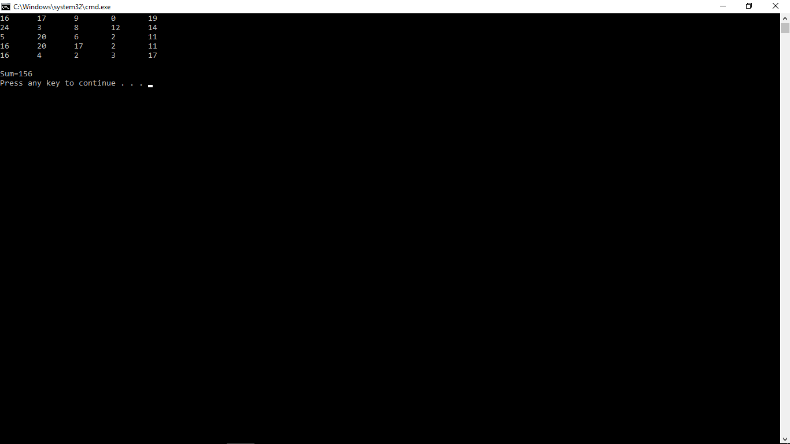

Лабораторна робота 8:
Розробка на С багатофайлових проектів
Нахуй эту бурсу:
- познайомитися із засадами розробки багатофайлових проектів в мові програмування С;
- познайомитися із прийомами розробки багатофайлових проектів в інтегрованому середовищі Visual C++ 6.0.
1.Опис засобів та прийомів створення багатофайлового проекту інтегрованого середовища Visual C++ 2005:
- Спочатку створюємо новий проект таким самим чином як ми це робили у лабораторній роботі № 2 (створюємо порожній проект, потім файл для вхідного тексту програми) і поміщаємо в нього текст функції main.
- Для створення другого файлу повторюємо тi самi кроки, що i для першого: в деревi пiдвiкна Solution Explorer наводимо курсор на теку Source Files i натискаємо на праву клавiшу мишки, у випадаючому вiкнi вибираємо пункт Add, а пiсля цього пункт New Item; у вiкнi Add New Item задаємо iм'я файла, який буде мi стити текст наступної функцiї - (на цей раз bisec.c). З'являється нове вiкно текстового редактора iз закладкою bisec.c. В нього помiщаємо текст функцiї bisec.c.
- Третій файл із заголовочним файлом створюється дещо по іншому. Курсор мишки наводимо не на теку Source Files, а на теку Header Files. Розшиненя iменi файла у цьому випадку має бути .h. У цьому конкретному прикладi bisec.h.
2. Індивідуальні завдання:
6-10сц(А.692к). Задана квадратна матриця порядку n. Знайти максимальне значення елементів, які розміщені в заштрихованій частині матриці.
3. Тексти програм та результати їх роботи.
// Файл з основною програмою
#include <iostream>
#include <conio.h>
#include "prt.h"
using namespace std;
int main(void) {
int k;
summatr();
}
//Файл з функцією
#include <iostream>
#include "prt.h"
using namespace std;
void summatr(void) {
int ar[5][5];
int sum = 0;
for (int i = 0; i < 5; i++)
{
for (int j = 0; j < 5; j++)
{
ar[i][j] = rand()%25;
}
}
for (int i = 0; i < 5; i++)
{
for (int j = 0; j < 5; j++)
{
cout<<ar[i][j]<<"\t";
}
cout << endl;
}
cout << endl;
for (int i = 0; i < 5; i++)
{
for (int j = 4 - i; j < 5; j++)
{
sum += ar[i][j];
}
}
cout <<"Sum="<< sum;
cout << endl;
}
//Файл Header
#ifndef prt_H
#define prt_H
void summatr(void);
#endif

Висновок:
на лабораторній роботі я познайомився із засадами розробки багатофайлових проектів в мові програмування С. Також, я познайомився із прийомами розробки багатофайлових проектів в інтегрованому середовищі Visual C++ 6.0.